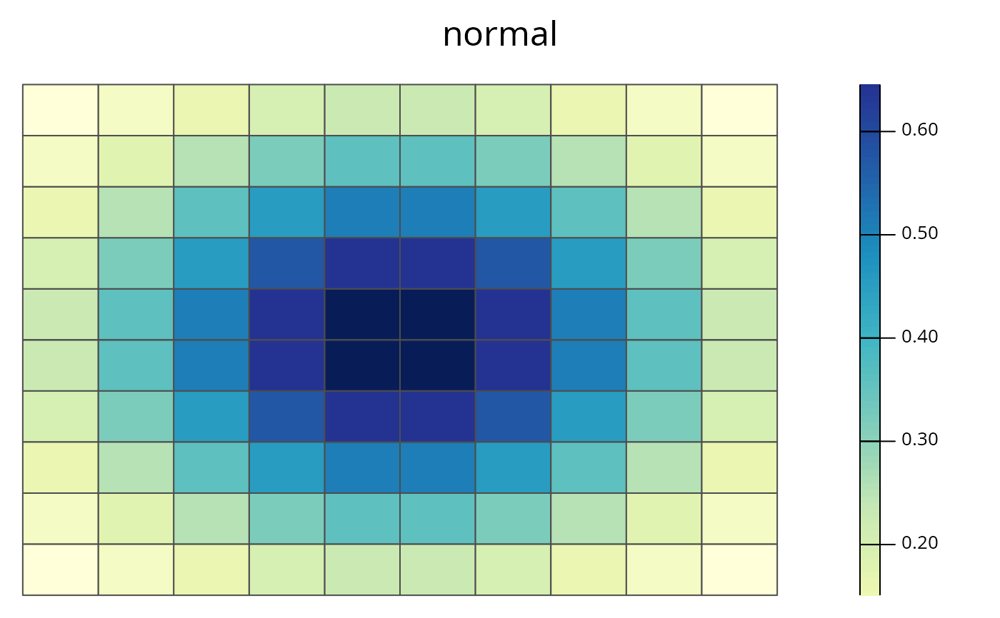
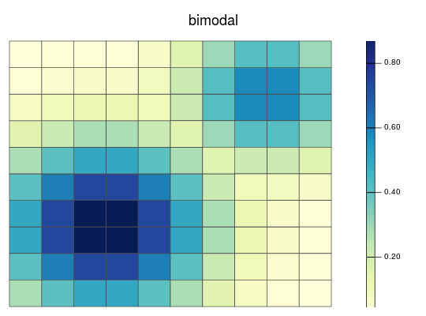
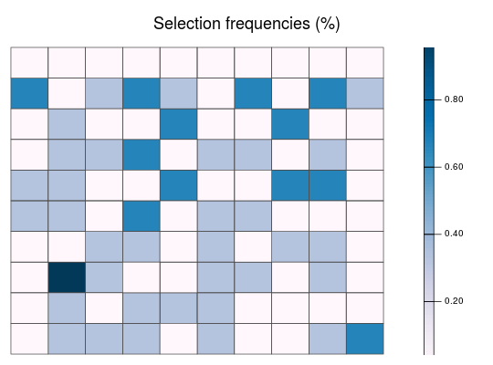
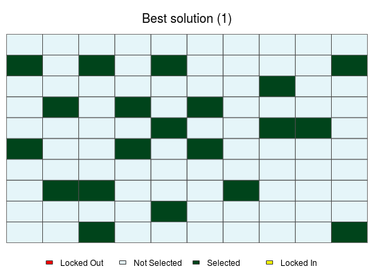

Simulated dataset for a conservation planning exercise
This dataset contains all the data needed to generate prioritisations for three simulated species. This dataset contains planning units, species distribution maps, and demand points for each species. For the purposes of exploring the behaviour of the problem, demand points were generated using the centroids of planning units and the probability that they are occupied by the species. Note that methodology is not encouraged for real-world conservation planning.
sim_ru sim_rs
Format
SpatialPolygonsDataFrame,
RasterStack-class, list of
DemandPoints objects.
Details
The species were simulated to represent various simplified species distributions.
- uniform
This species has an equal probability (0.5) of occurring in all planning units.
- normal
This species has a single range-core where it is most likely to be found. It is less likely to be found in areas further away from the centre of its range.
- bimodal
This species has two distinct ecotypes. Each ecotype has its own core and marginal area.
The objects contained in this dataset are listed below.
- sim_ru
A
RapUnsolvedobject with all the simulated data.- sim_rs
A
RapSolvedobject with 5 near-optimal solutions.
Examples
